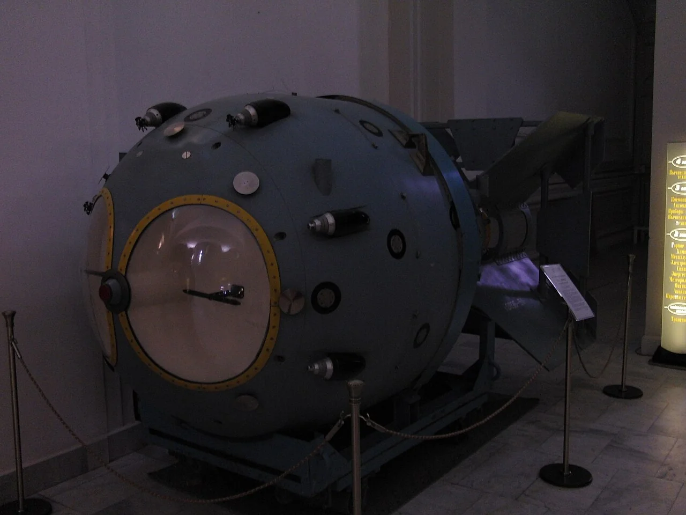
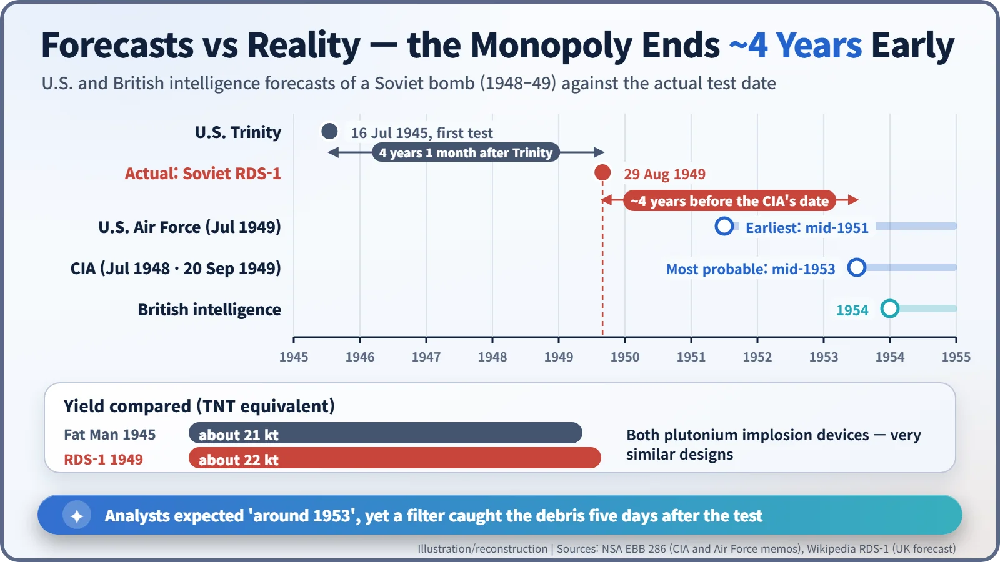
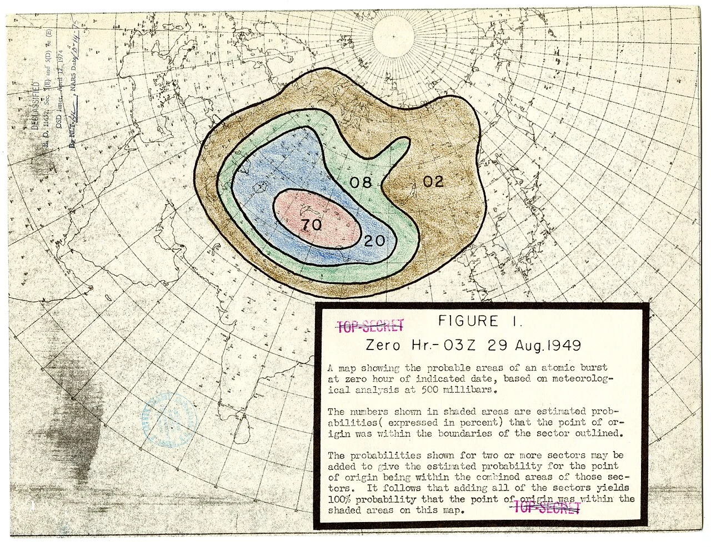
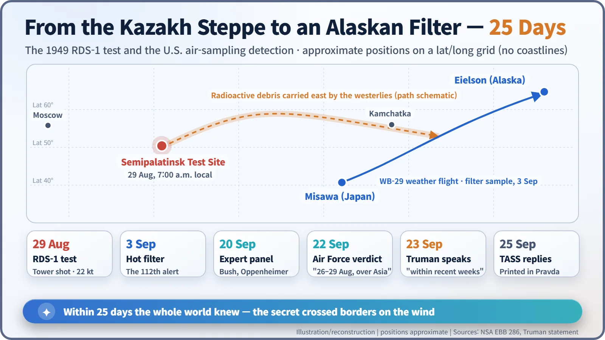

Nuclear History · 134
The Wind Told the Secret First — RDS-1, the Soviet Bomb That Ended the U.S. Monopoly (1949)
U.S. analysts expected a Soviet bomb around 1953; a weather plane's filter proved them four years late, and the atomic monopoly was over.
On 29 August 1949 the Soviet Union exploded its first atomic bomb, RDS-1, on a tower at the Semipalatinsk test site in Kazakhstan, years earlier than U.S. intelligence expected. A U.S. weather aircraft's air filter caught the radioactive debris five days later, and on 23 September President Truman told the world that the American monopoly was over.
One sentence, no details
"We have evidence that within recent weeks an atomic explosion occurred in the U.S.S.R."
That was the heart of a short statement from President Harry S. Truman (1884–1972) on 23 September 1949. It said nothing about when, where or how the United States knew. It simply told the world that the atomic bomb, an American monopoly for four years, belonged to America alone no longer. Behind that single sentence lay a 25-day chase that ran from the steppe of Kazakhstan, through Japan, to a filter unpacked in Alaska. [1]
"Mid-1951 at the earliest, probably mid-1953"
Washington was in no hurry to expect a Soviet bomb. In a memo of 6 July 1948 the Central Intelligence Agency judged a Soviet weapon by mid-1950 only "remotely possible" and named mid-1953 as the "most probable date". In July 1949 the U.S. Air Force put the earliest possible date at mid-1951. British intelligence was thinking of 1954. [2] [5]
The Cold War was already well under way. From June 1948 to May 1949 the Soviet Union cut the land routes into West Berlin, and the Western allies kept the city alive by airlift. In that atmosphere the bomb monopoly was America's strongest card.
29 August 1949, 7:00 a.m., on the Irtysh steppe
At 7:00 a.m. local time on 29 August 1949, at the Semipalatinsk test site in the Kazakh Soviet Socialist Republic, a device sitting on a 37.5-metre steel tower exploded. The site lay roughly 170 km west of the town of Semipalatinsk (sources give anywhere from about 150 to 170 km). The yield was about 22 kilotons of TNT. Buildings, a tank, bridges and test animals had been set out at measured distances to record the effects. [5] [6]
Its official name, RDS-1, came from a deliberately bland cover term in government papers, usually read as "special jet engine". The Americans called it "Joe-1", after Joseph Stalin. The romantic nickname "First Lightning" was attached only in later literature.
On hand were the project's scientific director Igor Kurchatov (1903–1960), the chief designer Yulii Khariton (1904–1996) and Lavrentiy Beria (1899–1953), the secret-police chief who oversaw the whole effort. The plutonium had been made in the production reactor at Chelyabinsk-40 in the Urals.

Why it looked so much like Fat Man
RDS-1 was a plutonium implosion device, the same type as "Fat Man", the bomb used on Nagasaki. In an implosion design, conventional explosives squeeze a plutonium core evenly from every side. Its yield was almost the same too: Fat Man released about 21 kilotons.
The resemblance was no accident. Through Klaus Fuchs and other sources, Soviet intelligence knew how Fat Man was built. Soviet designers already had a lighter, more advanced design of their own, but for the first test they chose the approach that had been proven to work in America; failure was not an option, and Beria is said to have insisted on it. [5]
Stolen paper alone did not make a bomb, though. Mining uranium, building reactors and extracting plutonium was a vast industrial job the Soviet Union had to do for itself. How much espionage shortened the effort is still debated. The U.S. Department of Energy's history says it "probably hastened by at least 12-18 months" the Soviet bomb; Fuchs, after his arrest, put it at "one year at least"; Russian accounts put more weight on Soviet scientists' own abilities. [3]

A filter flown from Japan to Alaska
The secret leaked on the wind. The U.S. Air Force's special unit AFOAT-1 already ran a "long-range detection" system: weather reconnaissance aircraft flew set routes and pulled air through filter paper to catch the traces of distant nuclear tests.
On 3 September 1949 a WB-29 weather aircraft on a routine flight from Misawa Air Base in Japan to Eielson Air Force Base in Alaska came back with a filter showing unusually high radioactivity. It was the system's 112th alert. The previous 111 had all been caused by natural events such as earthquakes. [2]
More flights collected more samples, and the firm Tracerlab, Los Alamos and British scientists set to work on them. The key evidence was fission products. When uranium or plutonium splits, it leaves a mix of new elements, and each has its own half-life, the time it takes for half of it to decay. Measure the ratios between several of them and, like reading an hourglass backwards, you can work out when they were made. The U.S. Weather Bureau even traced the winds back to draw a probability map of where the explosion had happened.

Twenty-five days to an announcement
On 20 September a panel of scientists including Vannevar Bush and J. Robert Oppenheimer backed the analysis. On 22 September the Air Force Chief of Staff, General Hoyt Vandenberg, wrote: "I believe an atomic bomb has been detonated over the Asiatic land mass during the period 26 August 1949 to 29 August 1949." Awkwardly, a CIA memorandum dated 20 September still named mid-1953 as the most probable date. The next day, Truman spoke. [2]

After the monopoly
Moscow answered with a TASS statement printed in Pravda on 25 September. It recalled that Foreign Minister Vyacheslav Molotov had already declared in November 1947 that the secret of the atomic bomb no longer existed. A formal Soviet announcement that the country possessed the weapon followed only in March 1950. [6]
On 17 October CIA Director Roscoe Hillenkoetter told Congress's Joint Committee on Atomic Energy: "I don't think we were taken by surprise." The forecasts had been nearly four years too late, yet the detection network had picked up the debris within five days, so both judgements could be argued. [2]
The shock quickly fed the next race. In Washington a fierce debate began over whether to build a far more powerful hydrogen bomb, and on 31 January 1950 Truman ordered work on it to continue. The technique of filtering the sky for traces of other nations' tests became a root of today's test-monitoring systems.
Semipalatinsk went on to host more than 450 nuclear tests over the next four decades (totals vary slightly by source). The site was closed on 29 August 1991, exactly 42 years after the first explosion. In 2009 the UN General Assembly, on Kazakhstan's initiative, made that date the International Day against Nuclear Tests. The day that ended a monopoly has become a day for asking that testing stop. [4]